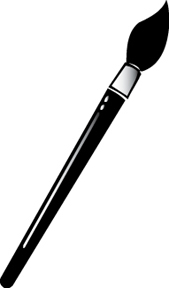
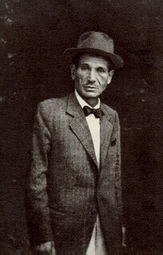

MenüÉletrajzKatalógusEgy képe
|
Egry József |
|

Festő, Kossuth-díjas (1948), a magyar modern festészet egyik legeredetibb képviselője. Napszámos szülők gyermeke. Festészeti tanulmányait Korcsek Jánosnál kezdte meg, majd Münchenben folytatta. 1905-ben Lyka Károly segítségével Párizsba utazott, ahol főként a modern festői törekvéseket tanulmányozta. Visszatérve 1906-1908 között a Képzőművészeti Főiskolán Ferenczy Károly és Szinyei Merse Pál tanítványa. 1907-ben Menhely előtt című képével állami ösztöndíjat nyert. 1909-ben kollektív kiállítása volt a Művészházban. 1918-tól kezdve a Balaton mellett élt, és számtalan változatban festette a Balatont Keszthelyen, Badacsonyban, majd Badacsonytomajban. 1924-ben Ernst-díjat, 1926-ban Szinyei-tájképdíjat, 1945-ben állami nagydíjat nyert. 1930-ban Szicíliában járt tanulmányúton (Isola Bella, Taorminai hegyek között). A plein air törekvéseket és konstruáló irányokat ötvöző drámai erejű piktúrájának fiatalkori szakaszát kubisztikus útkeresés jellemezte. Belgiumi tanulmányútja után már Meunier hatását tükröző munkásképeket festett. Az 1920-as évektől kezdve viszont csaknem kizárólagos témája a Balaton. Először az expresszionizmus formanyelvén fejezte ki magát, majd egyéni stílust teremtett. E sajátos technikájú (olajpasztell festésű) képei szuggesztív látomásban egyesítik az embert és a természetet (Szegény halászok, Visszhang, Vitorlaigazító). Számos képe van a Magyar Nemzeti Galériában, a pécsi, keszthelyi múzeumban, valamint magángyűjteményekben. E művek között több önarckép is található. |